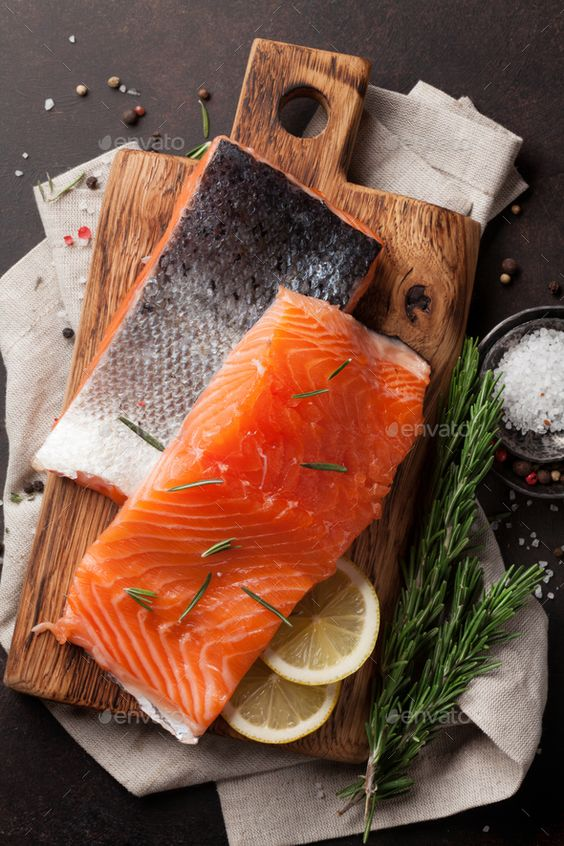

To get a glowing face, we must practice skin care. However, some of us are unconcerned about skin care and are thus exposed to bad effects.Do you all know the basic of skin care? Are the tips you've been following so far completely right? This guide is for anyone who is curious about what it means or what it takes to have a skin-care routine but doesn’t know where to start.
1.Cleanser Cleansers are essential components of every skin-care regimen since they remove excess oil, makeup, debris, and dead skin cells while also maintaining moisture.Use a cleanser as the first major step in your skin-care routine every morning and night, after removing any eye makeup with a separate makeup remover or micellar water. You should also cleanse after any heavy sweating. To begin using a cleanser, apply it with your fingertips according to the product's directions (for some you may need to wet your skin first with water, but others mainly cleansing oils and balms require dry skin).Then, gently massage it into your skin for 30 seconds to one minute, or until the product lathers, before rinse with lukewarm waterCleanser is a simple technique. However, you need to use a cleanser that suits your facial skin. 2.Exfoliants Although exfoliating isn't required, some people find that it helps with problems including acne. Exfoliation, in reality, eliminates the outer layers of dead skin cells, aiding in the brightening and smoothing of the face, evening out pigmentation, unclogging pores, and reducing the appearance of fine lines and wrinkles If you still want to exfoliate, do it immediately after cleansing, either in the morning or evening. The frequency varies according on the product and your skin. To be cautious, Dr. Chien suggests starting with once a week and seeing how it works. If you discover that your exfoliation technique is too harsh, consider reducing the pressure on your manual exfoliator or switching to a softer chemical exfoliant (such as lactic acid or a PHA). 3.Moisturizers Moisturizers, which are considered a necessary in skin-care routines, help draw and seal moisture into the skin, which helps the skin barrier protect and hydrate your skin more efficiently, according to Dr. Lipner. They're necessary in the morning but optional in the evening, according to Dr. Chien, as long as your skin isn't dry and you're not using a retinoid that can cause dryness or irritation. Dermatologists agree that moisturisers should be applied after cleansing and exfoliating in the morning, but disagree on whether they should be administered before or after sunscreen. Choose a moisturiser with at least SPF 30 and broad-spectrum protection (for daytime use) to make the decision easier, then add makeup on top. 4.Sunscreen
Sunscreen is a must-have since it protects the skin from the sun's UV rays, which can cause skin cancer and premature aging, according to Dr. Lipner. Every day, after cleansing and exfoliating, and before applying makeup. Apply at least 15 minutes before going outside (30 minutes before going in the water), and reapply every two hours if you're going to be outside. Physical sunscreens (made of zinc, iron oxide, or titanium dioxide) physically stop UV rays from burning the skin, whereas chemical sunscreens (typically ending in -ate or -one) absorb the ultraviolet radiation and subsequently break it down.
MAKEUP TIPS
Women and beauty are inseparable and for that reason also in handbags and even in workplace drawers there must be containers containing makeup. Whether a person wears makeup frequently or not, it is guaranteed that everyone has their own collection of cosmetic tools or at least a set of foundations such as compact powders, lipsticks, blushers, eyeliner, and foundation.Other people do it, some are confident in facing the audience with a plain face without a trace of make -up but almost most women are used to wearing simple make -up every time they go out. This guide is for everyone who wants to learn how to apply makeup properly so that you may enhance your beauty and feel more confident in front of others. 1.Primer A primer builds the basis for cosmetics, giving it a flawless appearance and extending its wear time. You can use BB creams, CC creams, and tinted moisturizer, or you can buy a face primer that is perfect for your skin type. These are a nice mix of makeup primers and moisturizers, plus they also include sunscreen! 2. Foundation A foundation evens out skin tone without making it appear too bright. This, of course, is based on whether the foundation you choose is appropriate for your skin type and tone. To begin, dab some foundation on your palm and use a brush to apply it to your face. Blend the foundation evenly across your face with a sponge. 3.Eyeliner It's simple to line the waterline, or the bottom of your eyes. However, many women find applying eyeliner to the lash line difficult. A simple makeup look, on the other hand, does not necessitate a fancy winged-liner look or a double-liner style. The shape of your eyes can be defined with a single stroke. To get varied results, try experimenting with different types of liners. For example, a pencil eyeliner can be used for a gentle yet thick stroke, whilst a liquid eyeliner can be used for a darker, sharper look. 4.Concealer Concealer helps cover dark circles and blemishes in simple beauty routines, whereas concealer palettes are used for colour adjustments and mask any spots, dark circles, blemishes, and huge pores in more advanced makeup routines, such as HD and airbrush makeup. Select a concealer that is two shades lighter than your natural skin tone. 5.Lip color Use an old toothbrush to gently clean away dead skin on and around the lip area before putting any makeup. After that, apply a lip balm to your lips to keep them moisturised. Finally, choose a lip colour that goes well with your entire appearance. If your lips are thin and uneven, you can apply a lip liner to give them contour and definition.
How to Restore Damaged Hair
Is your hair no longer silky and textured as it used to be? Have you had dull strands that don't move? Stay on top! It's possible that your hair is damaged. To be certain, perform the knot test with a tiny lock of hair. Separate the lock, make a loop with your fingers, and then release it instantly.
Is the knot still intact, or did it unravel easily? Be aware if it stayed intact; your hair may not be healthy enough to untie the knot on its own. But what should you do every day to replenish the strength and hydration required to maintain your hair healthy? You'll find the answers here. REGULARLY GET YOUR HAIR CUT The first step is to go to a professional hairdresser. Request that they analyses your hair and determine how much to chop off. Frequent haircuts should be something we schedule on a regular basis. It not only keeps our hair dressed the way we want it, but it also keeps our locks in good condition by eliminating split ends, which may cause more damage if left alone. Although it may appear absurd, trimming your hair can really make it grow longer. This isn't because cutting your hair helps it to grow faster since you trim the tips rather of the root, which is where it originates from. However, by allowing skilled hands to trim your hair on a regular basis, you will be remove any damaged hair and split ends that may be holding down the growth process TRY A TREATMENT OIL Your hair faces a hammering from the elements on a regular basis. Excessive exposure to sunshine, wind, and rain can cause dryness, which, if not addressed, can lead to breaking. So preserve your hair by conditioning it once a week with an intense mask or oil treatment, such as TRESemmé Botanique Damage Recovery Oil. This will nourish your strands from inside, resulting in stronger-feeling, healthier-looking hair USE SPECIFIC PRODUCTS FOR DAMAGED HAIR Ginseng root can be used to cure damaged hair. As we know, it has long been regarded as one of the most popular herbal treatments in Asia. Ginseng root has a variety of minerals and advantages. It can have composed of active components known as ginsenosides, which promote hair growth and cycle. the capacity to combat some of the physiological reasons that cause hair loss is the primary reason it promotes hair growth. Ginsenosides, for example, have an anti-oxidant impact that modifies the hair development cycle and influences keratinocyte and dermal papilla growth. Ginseng's nutritional ingredients, such as saponin and phytosterols, aid in the maintenance of a healthy scalp. INVEST IN TREATMENT CREAMS Our hair, like our body, need a lot of care. Oils can hydrate the hair, but they can also make it seem greasy. Hair treatment cream not only serves as a style product, but it also helps to keep hair healthy. Natural ingredients such as Rosemary oil, Hemp oil, Peppermint oil, and Almond oil add shine and nourishment to your hair while protecting it from pollution, UV radiation, and filth. Today's hair cream provides a more natural appearance. Hair treatment cream application, especially for dull hair, produces a well-groomed appearance simply. If you are applying after shampoo, apply hair treatment cream after towel drying wet hair. Take some cream on your palm and massage it through damp hair. Cover all hair evenly and style as desired with fingertips, scrunching for curly styles or smoothing down with a brush for a straight appearance. HEAT PROTECTION IS INDISPENSABLE Blow dryers, flat irons, and curling tongs are all essential style equipment, But did you know they can reach temperatures of up to 230°C? It's hardly surprising, however, that these can leave hair dry and damaged. That's where heat protection sprays come in used on damp hair before blow drying, and again on dried hair before using hot styling tools, they provide a barrier to protect hair from harsh temperatures while keeping it soft and lustrous
Do you want to be naturally beautiful? Use these 8 foods to maintain your skin healthy and attractive.
MANY people want white and fluffy skin so they are willing to use various products whose contents are unknown so that it is harmful to health. But on the other hand, uneven or problematic skin color such as acne is also caused by unhealthy eating habits. The good news is that there are a variety of foods that can help you enhance your skin while also reducing acne and preventing skin cancer. CHOCOLATE
Dark chocolate rich in cocoa has been proven to help get smooth skin however its consumption should not be too frequent. Rosemary Rosemary is the finest herb for your skin since it is high in antioxidants and lowers your risk of developing melanoma (tumor on the skin). Olive oil Olive oil contains healthy fats and polyphenol antioxidants that help repair skin damage caused by smoke pollution and excessive sun exposure. Tomato Tomatoes, in particular, are high in lycopene, an antioxidant that improves sun protection. Tomatoes are also beneficial to men's prostate health. Carrot It contains beta-carotene, which contributes to the 'glow' of your skin. Blueberry There's a reason these berries are blue in colour: they're high in antioxidants and a good source of vitamins A, C, and E, which help with skin suppleness and reduce skin damage. GreenTea Like most foods on this list, green tea is also rich in polyphenols and antioxidants that help stretch the skin as well as protect against sun damage Salmon fish

The salmon fillet is pink/orange due to the presence of astaxanthin, a carotenoid that is hundreds of times more potent than Vitamins C and E. Most significantly, it provides collagen to your skin.
Subscribe now Ladies!
Outer beauty attracts, but inner beauty captivates